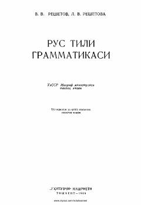

RTO'zbek guruhlari uchun rus tili grammatikasi va fonetikasidan o'quv qo'llanma.
Mazkur qo'llanma o'zbek guruhlari talabalari va maktablarning yuqori sinf o'quvchilari uchun rus tili grammatikasini o'rganishga bag'ishlangan. Kitobda rus tilining fonetikasi, tovushlar tasnifi va nutq organlari haqida batafsil nazariy ma'lumotlar berilgan.